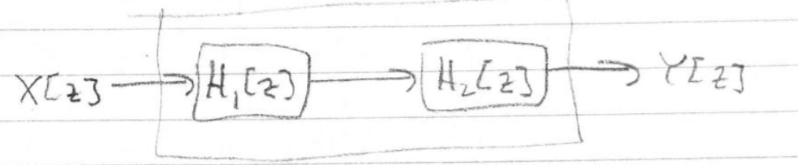

Most sophisticated modern technology incorporates a computer in some way. Computes only take action at the clock ticks, and are this naturally modelled in discrete time
Many signals are innately, discrete time such as your monthly cell phone bill, or the government’s annual report on the National GDP. In ECE, many discrete-time signals arise from sampling continuous time signals.
In ECE, discrete time systems are typically made up of summing and difference junctions, amplifiers and (unit) delays
Example (First order digital filter)

\begin{aligned} e[k] &= x[k] - By[k]\\ y[k] &= Ae[k-1]\\ \end{aligned}\Bigg\} \implies y[k] = Ax[k-1] - ABy[k-1]
As in continuous-time, the discrete impulse is of great significance in the study of linear discrete-time systems.
The discrete-time impulse is much more straightforward than in continuous time \delta[k] := \begin{cases} 1,& k = 0 \\ 0,& \text{otherwise} \end{cases}
Since \delta[k] is 0 everywhere except k = 0, where it is 1, we have
\sum_{n=-\infty}^{\infty}\delta[n] = 1 which is analogous to the continuous time property \int_{-\infty}^{\infty}\delta(\tau)d\tau = 1
Theorem: Given a discrete time signal x[k], x[k] = \sum_{n=-\infty}^{\infty} x[n]\delta[k-n] = \sum_{n=-\infty}^{\infty} x[k-n]\delta[n]
Proof From the definition of \delta[k]: x[n]\delta[k-n] = \begin{cases} x[k],& k = n \\ 0,& k \neq n \end{cases}
Just as in continuous time, where the impulse response of an LTI system completely characterized its input-output relation via y(t) = \int_{-\infty}^{\infty} x(\tau)h(t-\tau)d\tau in discrete time we have the following theorem
Theorem:
Given a discrete-time LTI system with an impulse response h[k], its response to any input x[k] is y[k] = \sum_{n=-\infty}^{\infty} x[n]h[k-n] = \sum_{n=-\infty}^{\infty} x[k-n]h[n]
Proof From the definition of \delta[k]:
Theorem:
An LTI system with an impulse response h[k] is causal if and only if h[k] = 0\;\;\forall k < 0
Proof:
\Rightarrow Assume causal
By linearity if x_1(t) = 0, then y_1(t) = 0
\delta[k] = x_1[k] = 0\;\;\forall k < 0, so by causality, h[k] = y_1[k] = 0\;\;\forall k < 0
\Leftarrow Assume h[k] = 0\;\;\forall k < 0, since the system is LTI, y[k] = \sum_{n=-\infty}^{\infty} x[n]h[k-n] where h[k-n] = 0\;\;\forall k -n < 0 \Leftrightarrow n > k. Thus y[k] = \sum_{n=-\infty}^{k} x[n]h[k-n] y[k] depends on x[-\infty],\dots, x[k] but not x[k+1],x[k+2]\dots so the system is clearly causal.
Corollary: If the system is LTI causal, then y[k] = \sum_{n=-\infty}^{k} x[n]h[k-n] = \sum_{n=0}^{\infty} x[k-n]h[n]
These summations are discrete convolutions (X\ast Y)[k] := \sum_{n=-\infty}^{\infty}x[n]y[k-n]
Properties:
Since summations are generally more difficult to evaluate than integrals, we will not develop an \alpha[k], \beta[k] method of evaluating convolutions. We will instead wait until we have introduced the z transform
Many important discrete-time systems, including the first order filter we say at the start of this chapter are modelled by difference equations of the form.
\begin{aligned} y[k+n] + a_{n-1}y[k+n-1] + \cdots + a_1y[k+1] + a_0y[k] \\ \,\,= b_mx[k+m] + \cdots + b_1x[k+1] + b_0x[k] \end{aligned} where y is the output and x is the input and n (\geq m) is the order of the difference equation, m \geq 0 and b_m \neq 0
Define the time-advance operator E E\{z[k]\}:=z[k+r] Using E, define the polynomials \begin{aligned} Q(E) &:= E^n + a_{n-1}E^{n-1} + \cdots + a_1E + a_0\\ P(E) &:= b_mE^m + \cdots + b_1E + b_0 \end{aligned}
Now we can write our difference equations as Q[E]y[k] = P(E)x[k]
Just as in continuous time, there are infinitely many solutions unless we impose auxiliary conditions, for example: y[k+1]+y[k] = x[k] Even if we know x[k] we don’t have enough information to solve for y[k] for all k or any k! y[1] + y[0]= x[0]\dots\Large?
Let’s take our difference equation, time-shift k\rightarrow k-n, and rearrange \begin{aligned} y[k] = &-a_{n-1}y[k-1] - \cdots - a_1y[k-(n-1)] - a_0y[k-n]\\ &+b_mx[k-(n-m)] + \cdots + b_0x[k-n] \end{aligned}
Substitute k=0, \begin{aligned} y[k] = &-a_{n-1}y[-1] - \cdots - a_0y[-n]\\ &+b_mx[-(n-m)] + \cdots + b_0x[-n] \end{aligned}
We always know x[k], so what’s “missing” is y[-1], y[-2], \dots, y[-(n-1)], y[-n] which are the initial conditions
Analogously to continuous-time, we will study the system \begin{cases} Q(E)y[k] = P(E)x[k],\\ y[-1] = \alpha_0, \dots, y[-n]=\alpha_{n-1},\\ x[k] = 0\;\;\forall\;\; k < 0 \end{cases}
One can show that
y[k] = y_{zi}[k] + y_{zs}[k]
where \begin{cases} Q(E)y_{zi}[k] = 0,\\ y_{zi}[-1] = \alpha_0, \dots, y_{zi}[-n]=\alpha_{n-1},\\ \end{cases}
and \begin{cases} Q(E)y_{zs}[k] = P(E)x[k],\\ y[-1] =0, \dots, y[-n]=0,\\ x[k] = 0\;\;\forall\;\; k < 0 \end{cases}
Equipped with the discrete-time notion of initially at rest, y[-\infty] = 0 linearity, time-invariance, and causality, can be proven using similar proofs as in continuous time with obvious changes
Recall that by the fundamental theorem of algebra Q(\lambda) = (\lambda-\lambda_1)^{m_1}(\lambda-\lambda_2)^{m_2}\cdots(\lambda-\lambda_r)^{m_r} with n=m_1+\cdots+m_r
Theorem:
If Q(\lambda) has n distinct non-zero roots then
y_{zi}[k] = \sum_{i=1}^nc_i\lambda_i^k
where the coefficients c_i are given by
\begin{bmatrix}
\lambda_1^{-1} &\; \lambda_2^{-1} &\; \cdots &\;\lambda_n^{-1}\\
\lambda_1^{-2} &\; \lambda_2^{-2} &\; \cdots &\;\lambda_n^{-2}\\
\vdots &\; \vdots &\; \ddots &\; \vdots \\
\lambda_1^{-n} &\; \lambda_2^{-n} &\; \cdots &\;\lambda_n^{-n}\\
\end{bmatrix}
\begin{bmatrix}
c_1\\
\vdots\\
\vdots\\
c_n
\end{bmatrix}
=
\begin{bmatrix}
\alpha_0\\
\vdots\\
\vdots\\
\alpha_{n-1}
\end{bmatrix}
Proof:
We must satisfy the equation Q[E]y_{zi}[k] = 0
Consider the signal \lambda_i^k where Q(\lambda_i) = 0
We have
\begin{aligned}
Q(E)\lambda_i^k &= (E^n+a_{n-1}E^{n-1}+\cdots+a_1E + a_0)\lambda_i^k\\
&=\lambda_i^{k+n} + a_{n-1}\lambda_i^{k+n-1} + \dots + a_{1}\lambda_i^{k+1} + a_{0}\lambda_i^{k}\\
&=(\lambda_i^{n} + a_{n-1}\lambda_i^{n-1} + \dots + a_{1}\lambda_i^{1} + a_{0})\lambda_i^{k}\\
&=Q(\lambda_i)\lambda_i^k\\
&= 0\;\;\;\text{[}Q(\lambda_i)=0\text{]}\\
\end{aligned}
Guess the solution y_{zi}[k] = \sum_{i=1}^nc_i\lambda_i^k
We must satisfy the initial conditions \begin{aligned} \alpha_j = y_{zi}[j+1] &= c_1\lambda_1^{-j+1} + \dots + c_n\lambda_n^{-j+1}\\ &=\begin{bmatrix} \lambda_1^{-j+1} \cdots \lambda_n^{-j+1} \end{bmatrix} \begin{bmatrix} c_1\\ \vdots \\ c_n \end{bmatrix}\\ \end{aligned} which furnishes the matrix equation in the theorem. The matrix is a Van-der mode matrix and the \lambda_i are distinct, so there exists a unique solution for c_i
{\Large\ast} \begin{cases} Q(E)y[k] = P(E)x[k]\\ y[-1] = \alpha_0,\dots,y[-n]=\alpha_{n-1}\\ x[k] = 0\;\;\forall\;k\;<\;0 \end{cases}
Definition: A system is asymptomatically stable if for any choice of initial conditions, the zero-input response tends to zero as k\rightarrow\infty i.e. for all \alpha_j,\;j=0,\dots,n-1, y_{zi}[k]\rightarrow 0 as k\rightarrow \infty
Theorem: The system {\Large\ast} is asymptomatically stable if and only if all roots of Q(\lambda) have magnitude strictly less than 1 i.e. AS \Leftrightarrow (Q(\lambda) = 0 \implies |\lambda| < 1)
Proof: A discrete-time signal x[k] is bounded if there exists real B < \infty such that \forall\;k\;\epsilon\;\mathbb{Z}, |x[k]| \leq B
Definition: A system is BIBO stable if for all bounded inputs x[k] the zero-state response y_{zs}[k] is bounded i.e. BIBO \Leftrightarrow (x[k]\;bounded\implies y_{zs}\;bounded)
Theorem: The system {\Large\ast} is BIBO stable if and only if all roots of Q(\lambda) that are also no roots of P(\lambda) have magnitude strictly less than 1 i.e. (\forall\;\lambda\;\epsilon\;\mathbb{C})(Q(\lambda) = 0)(P(\lambda)\neq 0)( |\lambda | < 1)
Remark: Notice that we do not require n\geq m as in Continuous time.
The proof is similar to continuous time, but uses Z-transforms instead of Laplace Transforms
The z-transform is the discrete time analog of the Laplace transform. Just like in Chapter 3, we will use this transform to develop frequency domain tools to study systems modelled by different equations.
The z-transform of x[k] is \mathcal{Z}\{x[k]\} = X[z] := \sum_{k=0}^{\infty}x[k]z^{-k} where z\;\epsilon\;\mathbb{C} is some complex variable. We can clearly see that this the z-transform is oblivious to negative time.
A very useful fact for computing z-transforms is that, given p\;\epsilon\;\mathbb{C} where |p| < 1 \sum_{k=0}^{\infty}p^k = \frac{1}{1-p} Conversely, if |p| > 1 then the summation does not converge
Example: x[k] = \alpha^k \begin{aligned} X[z] &= \sum_{k=0}^{\infty}\alpha^kz^{-k}\\ &= \sum_{k=0}^{\infty}\Big(\frac{\alpha}{z}\Big)^{k}\\ &= \frac{1}{1-\frac{\alpha}{z}},\;if\;|\frac{\alpha}{z}| < 1 \Leftrightarrow |z| > |\alpha|\\ &= \frac{z}{z-\alpha} \end{aligned}
The summation converges only for z outside the disc of radius \alpha. Just as with Laplace transform, we don’t care about the specific z in this most cases. We just need there to exist some z that makes the summation converge
Linearity: \mathcal{Z}\{c_1x_1[k] + c_2x_2[k]\}[z] = c_1X_1[z] + c_2X_2[z]
Time Advance: \mathcal{Z}\{x[k+1]\}[z] = zX[z] - zx[0], or more generally \mathcal{Z}\{x[k+N]\}[z] = z^NX[z] - z^Nx[0] - \cdots - z^2x[N-2] - z[N-1] This property is analogous to the derivative property of Laplace transforms \mathcal{L}\{\frac{d^nx(t)}{dt^n}\}(s) = s^nX(s) - s^{(n-1)}x(0^-) - \cdots - sx^{(n-2)}(0^-)-x^{(n-1)}(0^-)
Time Delay: \mathcal{Z}\{x[k-1]\}[z] = z^{-1}X[z] + x[-1], or more generally \mathcal{Z}\{x[k-N]\}[z] = z^{-N}X[z] + z^{-(N-1)}x[-1] + \cdots + z^{-1}x[-(N-1)] + x[-N]
Multiplications by \alpha^k: \mathcal{Z}\{\alpha^kx[k]\}[z] = X(\frac{z}{\alpha})
Analogous to exponential scaling: \mathcal{L}\{e^{at}x(t)\}(s) = X(s-a)
Convolution: \mathcal{Z}\{(x\ast y)[k]\}[z] = X[z]Y[z]
Just like Continuous time: \mathcal{L}\{(x\ast y)(t)\}(s) = X(s)Y(s)
Final Value Theorem: If \lim_{k\to\infty}x[k] exists, then \lim_{k\to\infty}x[k] = \lim_{z\to1}(z-1)X[z]
Initial Value Theorem: x[0] = \lim_{z\to\infty}X[z]
Multiplication by k: \mathcal{Z}\{kx[k]\}[z] = -z\frac{dX[z]}{dz}
In particular, Z\{k\}[z] = \frac{z}{(z-1)^2}\text{ for a ramp} Z\{k^2\}[z] = \frac{(z)(z+1)}{(z-1)^3}\text{ for a parabola}
Recall the definition of the z-transform X[z] = \sum_{k=0}^{\infty}x[k]z^{-k} Just like the Laplace transform, the Z-transform is oblivious to negative time.
Theorem: If x_1[k] = x_2[k] for all k \geq 0, then X_1[z] = X_2[z] In particular, we take \mathcal{Z}^{-1}\{X[z]\}[k] = 0\;\;\forall\;k< 0, x_1[k] \neq x_2[k]
By convention we take Z^{-1}\{X[z]\}[k] = 0 for all k < 0
We will again use a lookup table for inverse transforms
| x[k] | X[z] |
|---|---|
| \delta [k] | 1 |
| u[k] | \frac{z}{z-1} |
| \alpha^k | \frac{z}{z-\alpha} |
| \frac{(k)_{n-1}\alpha^{k-(n-1)}}{(n-1)!} | \frac{z}{(z-\alpha)^n} |
| sin(k\omega T) | \frac{zsin(\omega T)}{(z^2-2zcos(\omega T)+1)} |
| cos(k\omega T) | \frac{z^2 - \alpha zcos(\omega T)}{(z^2-2zcos(\omega T)+1)} |
where (k)_n:= (k)(k-1)(k-2)\cdots(k-(n-2))(k-(n-1))=\frac{k!}{(k-n)!}_\;
Recall the Heaviside Expansion Theorem from Chapter 3
Theorem (Heaviside Expansion Theorem) If X(S) = \frac{N(s)}{D(s)} is coprime and deg(N) < deg(D), and D(s)=a_n(s-p_1)^{m_1}(s-p_2)^{m_2}\cdots(s-p_l)^{m_l} then, X(s) = \sum_{i=1}^{l}\Bigg\{\sum_{j=1}^{m_i}\frac{r_{ij}}{(s-p_i)^j}\Bigg\} where r_{ij} = \frac{1}{(m_i-j)!}\frac{d^{m_i - j}}{ds^{m_i - j}}\Bigg[X(s)(s-p_i)^{m_i}\Bigg]\Bigg|_{s=p_i},\;\;i=1,\dots,{m_i}_
We could directly apply this to z-transforms, but we can our lives much easier by observing from our able that most of our z-transforms have z in the in the numerator. It would therefore have us slightly modify the Heaviside method of partial fractions.
Let \frac{X[z]}{z} = \frac{N(s)}{D(s)} and D[z] = a_n(z-p_1)^{m_1}(z-p_2)^{m_2}\cdots(z-p_l)^{m_l}. Then, X[z] = \sum_{i=1}^{l}\Bigg\{\sum_{j=1}^{m_i}\frac{r_{ij}z}{(z-p_i)^j}\Bigg\} where r_{ij} = \frac{1}{(m_i-j)!}\frac{d^{m_i - j}}{ds^{m_i - j}}\Bigg[\frac{X(s)}{z}(z-p_i)^{m_i}\Bigg]\Bigg|_{z=p_i},\;\;i=1,\dots,{m_i}_
From our table x[k] = \begin{cases} \sum_{i=1}^{l}\Bigg\{\sum_{j=1}^{m_i} \frac{r_{ij}}{(j-1)!} (k)_{j-1}p_i^{k-(j-1)}\Bigg\},& k\geq 0_\;\\ 0, & k < 0 \end{cases}
Recall that we are focusing on systems of the form \begin{cases} Q(E)y[k] = P(E)x[k],\\ y[-1] = \alpha_0, \dots, y[-n]=\alpha_{n-1},\\ x[k] = 0\;\;\forall\;\; k < 0 \end{cases} which has the very nice property y[k] = y_{zi}[k] + y_{zs}[k]
where \begin{cases} Q(E)y_{zi}[k] = 0,\\ y_{zi}[-1] = \alpha_0, \dots, y_{zi}[-n]=\alpha_{n-1},\\ \end{cases}
and \begin{cases} Q(E)y_{zs}[k] = P(E)x[k],\\ y[-1] =0, \dots, y[-n]=0,\\ x[k] = 0\;\;\forall\;\; k < 0 \end{cases}
z-transforms greatly facilitate finding y_{zi} and y_{zs}
We just saw Y_{zs}[z] = \frac{P(z)}{Q(z)}X[z] so if x[k] = \delta[k] \implies X[z] = 1, then Y_{zs}[z] = \frac{P(z)}{Q(z)} Thus, the impulse response h[k] has z-transform H[z] = \frac{P(z)}{Q(z)} and h[k] = \begin{cases} \mathcal{Z}^{-1}\{\frac{P(z)}{Q(z)}\}[k],&k\geq 0\\ 0,&k< 0\\ \end{cases} The discrete-time impulse response is not indeterminate at k=0
Notice that, \frac{Y_{zs}[k]}{X[k]} = \frac{P(z)}{Q(z)} = H[z]
i.e. the ratio of the output to the input (with 0 Initial conditions) is always the same. Just as in continuous time we call this ratio, the transfer function and it is equal to the z-transform of the impulse response
Theorem: A DT LTI system is BIBO stable if and only if all the poles of its transfer function have magnitude less than 1.
Theorem: A DT LTI system is BIBO stable if and and only if Q(z) and P(z) have no common roots with magnitude 1 or greater, and all poles of its transfer function have magnitude strictly lesser than 1
Just as in CT, transfer functions facilitate the input-output modelling and analysis of interconnections of systems.
Series:  \frac{Y[z]}{X[z]} = H_1[z]H_2[z]
Parallel: \frac{Y[z]}{X[z]} = H_1[z]+H_2[z]
Feedback: \frac{Y[z]}{X[z]} = \frac{H_1[z]}{1\pm H_1[z]H_2[z]}
Continuous time signals are very often to produce discrete time signals which are then processed by digital hardware. As we’ve seen sinusoids are an important class of signals.
Theorem Consider the system \begin{cases} Q(E)y[k] = P(E)x[k],\\ y[-1] = \alpha_0, \dots, y[-n]=\alpha_{n-1},\\ \end{cases} Suppose the system is asymptotically stable with transfer function H[z] If \text{If } x[k] = \begin{cases} Acos(k\omega T + \theta), &k\geq 0\\ 0, & k < 0\\ \end{cases}
(cos(\omega t + \theta) sampled with period T > 0) then, \lim_{k\to\infty}y[k] =: y_{ss}[k] = A|H[e^{j\omega T}]|cos(k\omega T + \theta + \angle H[e^{j\omega T}])
Definition H[e^{j\omega T}] = |H[z]|\Bigg|_{z = e^{j\omega T}}\;_\; is called the frequency response.
Just as in continuous time, the initial conditions don’t affect the steady state behaviour. The system simply changes the magnitude and phase, not the “frequency”. (Recall that in Discrete time, sinusoids are generally not periodic)
Sketch of Proof: Consider the input x[k] = e^{j(k\omega T + \theta)}, then \begin{aligned} y_{zs}[k] &= (x \ast h)[k]\\ &= \sum_{n=0}^{\infty}x[k-n]h[n]\\ &= \sum_{n=0}^{\infty}e^{j((k-n)\omega T + \theta)}h[n]\\ &= e^{j(k\omega T + \theta)}\sum_{n=0}^{\infty}e^{-j(n\omega T)}h[n]\\ &= e^{j(k\omega T + \theta)}H[e^{j\omega T}] \end{aligned}
By linearity and Euler’s formula, the response to cos(k \omega T + \theta) = \frac{e^{j(k\omega T + \theta)}+e^{-j(k\omega T + \theta)}}{2} is \frac{e^{j(k\omega T + \theta)}H[e^{j\omega T}]+e^{-j(k\omega T + \theta)}H[e^{-j\omega T}]}{2} which is the even part of e^{j(k\omega T + \theta)}H[e^{j\omega T}] = \Bigg|H[e^{j\omega T}]\Bigg| e^{j(k\omega T + \theta + \angle H[e^{j\omega T}])} which is \Bigg|H[e^{j\omega T}]\Bigg| cos(k\omega T + \theta + \angle H[e^{j\omega T}])
Remark: Unlike continuous time, the discrete time frequency response is periodic in \omega. H[e^{j\omega T}] is \frac{2\pi}{T} periodic
Quite often, we want to interface digital hardware with continuous-time systems. Eg: Robots, cars. The main hardware involved in these “sampled-data” setups are A/D and D/A converters which are modelled by the idea sample S and ideal hold H operators respectively.
S(x(t)) = x[k], where x[k] = x(kT),\; T(> 0) is the sample period H(y[k]) = y(t), where y(t) = y[k],\; t\;\epsilon [kT, (k+1)T) is the sample period
Sometimes, it is easier to do design in continuous-time but implement on a computer Eg: filters. Given a system with transfer function G(s), we want to find a discrete-time system with transfer function G_d[z] such that y_1[k]\approx y_2[k] in the final diagram.
The most common technique for doing this is the bilinear transform: G_d[z]:= G(s)\Bigg|_{s = \frac{2(z-1)}{T(z+1)}}_
then Q(E)y[k] = P(E)x[k] is found from G_d[z] =\frac{P(z)}{Q(z)}
To see where this comes from, lets look at is simple example
Suppose \frac{dy(t)}{dt} = x(t), so y(t) = \int_{-\infty}^{t}x(\tau)d\tau
From this relation, we have
\begin{aligned} y(kT) &= \int_{-\infty}^{kT} x(\tau)d\tau\\ y[k] &= \int_{-\infty}^{(k-1)T} x(\tau)d\tau + \int_{kT}^{(k-1)T} x(\tau)d\tau\\ \end{aligned}
We can only measure x(t) at the sample times T, 2T, 3T etc. so we can only approximate \int_{(k-1)T}^{kT}x(\tau)d\tau, which depends on x(t) at all times t between samples kt and k
Use the trapezoidal method to approximate this integral
\int_{(k-1)T}^{kT}x(\tau)d\tau \approx \frac{T}{2}(x[k-1] + x[k])
So y[k] \approx y[k-1] + \frac{T}{2}(x[k-1] + x[k])
Assuming zero initial conditions and taking z-transforms
\begin{aligned} Y[z] &\approx z^{-1}Y[z] + \frac{T}{2}(z^{-1} + 1)X[z]\\ (1 - z^{-1})Y[z] &\approx \frac{T(z+1)}{2(z-1)}\\ \frac{Y[z]}{X[z]} &\approx \frac{T(z+1)}{2(z-1)} \end{aligned}
In continuous time we have \begin{aligned} \frac{dy(t)}{dt} &= x(t)\\ sY(s) &= X(s)\\ \frac{Y(s)}{X(s)} &= \frac{1}{s} \end{aligned}
An alternative approach is to discretize the continuous time system we are interfacing with, then do our design in discrete time
x(t) = H(x[k]) is a series of steps so we’d like to find G_d[z] such that its resppnse to u[k] matches the response of G(s) to u(t)
Let x[k] = u[k] then x(t) = H(x[k]) = u(t)
From the diagram: \begin{aligned} Y(s) &= G(s)\frac{1}{s}\\ y(t) &= \mathcal{L}^{-1}\{G(s)\frac{1}{s}\}(t)\\ y(kT) &= \mathcal{L}^{-1}\{G(s)\frac{1}{s}\}(t)\Big|_{t=kT}\;_\;\\ Y[z] &= \mathcal{Z}\Bigg\{\mathcal{L}^{-1}\{G(s)\frac{1}{s}\}\Big|_{t=kT}\;_\;\Bigg\} \end{aligned} but Y[z] = G_d[z]\frac{z}{z-1} so,
G_d[z] = \frac{z-1}{z} \Large\mathcal{Z}\{\mathcal{L}^{-1}\{\normalsize\frac{G(s)}{s}\Large\}\normalsize\Bigg|_{t=kt}\Large\}_
G_d[z] is called the step-invariant transform of G(s), because its step response exactly matches that of G(s) at t=kT, (k+1)T etc. It is not an approximation like the bilinear transform
Remark: The last lines are how these discretizations could be implemented on a computer